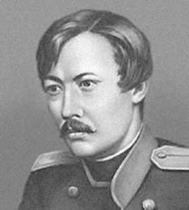

2-студент тақырыбы
Шоқан Уәлиханов - қазақтың тұңғыш ғалымы
Шоқан Уәлиханов - тарихшы, этнограф, географ, саяхатшы және ағартушы. Ол қазақ даласын, Орталық Азия халықтарын және олардың мәдени мұрасын ғылыми тұрғыдан зерттеген көрнекті тұлға.

Өмірі
Қысқа ғұмыр, терең із
Шоқан Шыңғысұлы Уәлиханов 1835 жылы қазіргі Солтүстік Қазақстан өңірінде дүниеге келді. Ол Абылай хан әулетінен шыққан, бала кезінен зерек, білімге құштар болып өсті.
Омбы кадет корпусында оқып, орыс және әлем ғылымымен танысты. Жас ғалым қазақ халқының тарихын, ауыз әдебиетін, салт-дәстүрін зерттеп, ғылыми ортада ерте танылды.
Ғылыми зерттеулері
Дала мәдениетін ғылымға танытқан зерттеуші
Этнография
Шоқан қазақ, қырғыз және басқа да Орталық Азия халықтарының тұрмысын, әдет-ғұрпын, аңыздарын ғылыми сипаттап жазды.
Тарих
Ол қазақ халқының шығу тегі, хандық дәуір, ел басқару жүйесі туралы құнды мәліметтер қалдырды.
География
Ғалым Жетісу, Ыстықкөл, Қашғария аймақтарына қатысты табиғи, тарихи және мәдени деректер жинады.
Саяхаттары
Ғылым жолындағы сапарлар
Жетісу сапары
Шоқан Жетісу өлкесін зерттеп, табиғаты, халқы және тарихи орындары туралы маңызды бақылаулар жасады.
Ыстықкөл экспедициясы
Қырғыз халқының мәдениеті мен ауыз әдебиетін зерттеп, "Манас" жыры туралы ғылыми пікір білдірді.
Қашғария сапары
Қашғарияға барған сапары арқылы Еуропа ғылымына бұрын аз белгілі аймақ туралы нақты деректер жеткізді.
Еңбектері
Ғылыми мұрасы
Шоқан Уәлихановтың еңбектері қазақ тарихы, этнографиясы, фольклоры және географиясы үшін аса маңызды. Оның жазбалары халық мәдениетін құрметтеуге, білім мен ғылымды дамытуға шақырады.
- 1856 Ыстықкөл мен Жетісу туралы деректер жинады.
- 1858 Қашғарияға құпия ғылыми сапар жасады.
- 1859 Қашғария туралы зерттеу нәтижелерін ұсынды.
- 1860s Қазақ пен қырғыз ауыз әдебиеті туралы еңбектер жазды.
Галерея
Тарихи тұлға бейнесі
Шоқан мұрасы - қазақ ғылымының алғашқы биік белестерінің бірі.
Ол аз ғана ғұмырында халық тарихын, мәдениетін және рухани мұрасын әлемдік ғылыммен байланыстыра білді.